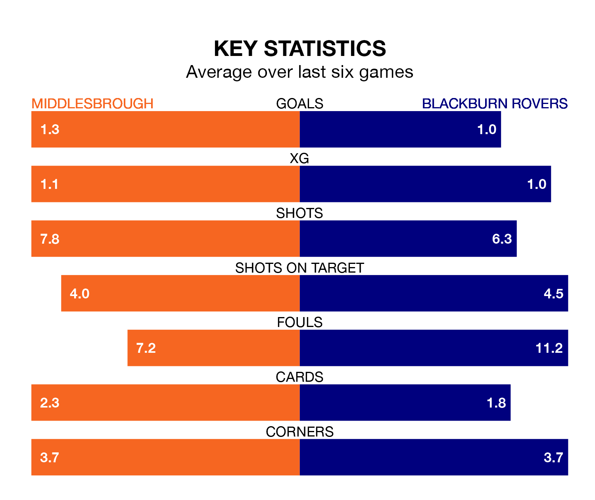

Middlesbrough host Blackburn Rovers at the Riverside Stadium on Saturday on the back of three consecutive wins in EFL Championship.
Middlesbrough have picked up 12 points from their last six games, and they face a Blackburn side who have lost their last two matches, and collected five points from the last possible 18.
In Samuel Szmodics, Blackburn have the league's sharpest shooter so far this season. He has notched 21 goals in 35 appearances.
Middlesbrough's top scorers, with seven goals each, are Marcus Forss and Emmanuel Latte Lath.
In the last 10 years, Middlesbrough and Blackburn have played each other on 15 occasions. Middlesbrough won two of them, Blackburn six, and they drew seven times.
On average, the Boro scored 0.7 goals and Blackburn 1.0 in those matches.
Their last meeting was on September 16, when Blackburn won 2-1 at home.
With 53 goals in 37 games so far this season, the Boro are scoring at the league's average rate with 1.4 goals per game. But they are conceding at an average rate too, letting in 52 goals at a rate of 1.4 per game.
Rovers are also average scorers, with 1.4 goals per game. They have conceded 1.7 goals per game.
The visitors are 18th in the table after 37 games, of which they have won 11 and drawn eight, earning 41 points.
The home team are nine places ahead of Blackburn in ninth, with 16 wins and five draws putting them on 53 points.
Middlesbrough's last match was on Tuesday, a 1-0 win against Birmingham City, with Riley McGree getting the goal for the Boro.
Blackburn drew 1-1 with Plymouth Argyle last time out, on March 9, with Szmodics on the scoresheet.
Saturday's match will be refereed by Keith Stroud, who has taken charge of 19 EFL Championship games so far this season, issuing one red card and booking 91 players. He has awarded two penalties.
The last Blackburn game Stroud refereed was the 4-3 loss away at Ipswich Town on September 23. He is yet to oversee a match featuring Middlesbrough this season.
Updated: 15:10 (UTC), 15/03/24